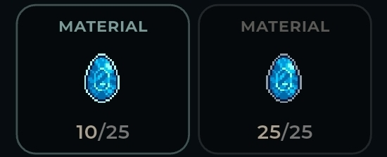
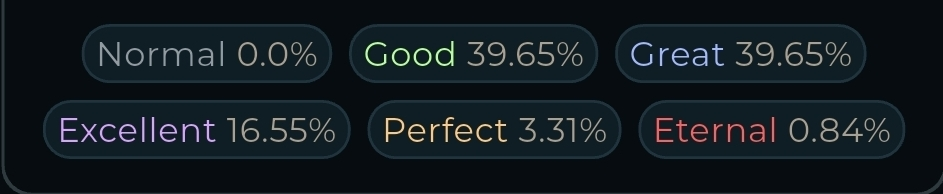
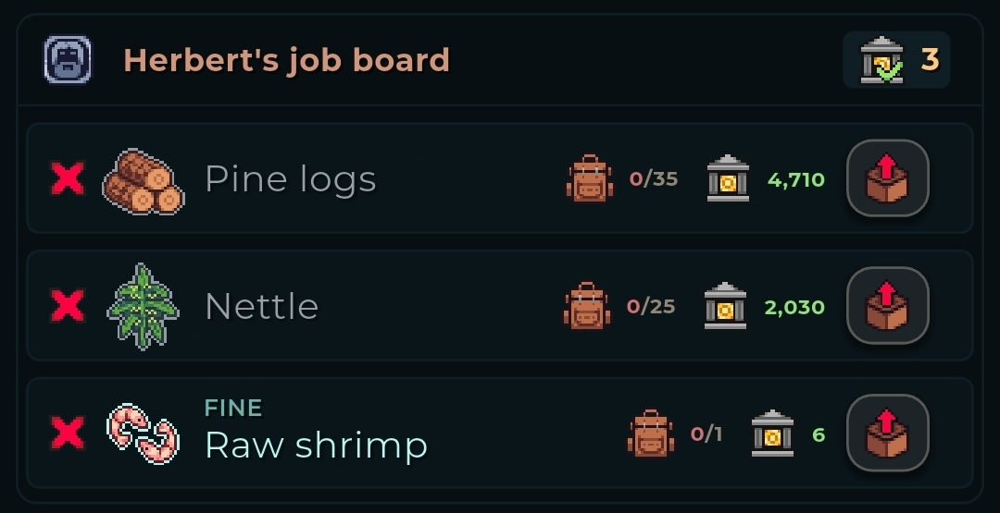

Fine materials are rare versions of materials that give bonuses when used with artisan skills. They lead to better outcomes and give increased experience!
Fine materials can only be obtained through gathering or from chests. You can't upgrade your normal materials to fine materials in any way.
Fine materials show a light blue border

The FMF attribute, increases your chance to find fine materials when gathering. It does not affect the fine rate in chests.
The stat increase is multiplicative!
With +100% FMF, your chance of finding fine materials is
doubled (2/100), not 100%.
Crafting with fine materials increases the crafted item quality.
If all materials are fine, crafts get +1 to their quality, making "Good" the lowest quality you can get!

Partial fines are allowed with non-material recipes (like upgrading tools), moving 30% of the lower quality chance to the next quality.Fine materials are the only way to cook fine consumables. They usually have double the effect!
Sometimes jobs ask for fine materials.
If the amount required looks too easy, they're probably asking for fines!

The Conservationist Set unlocked with 100-130 AP gives large bonuses to FMF at the cost of XP.
Other good options for gearing include crafted tools and some consumables.